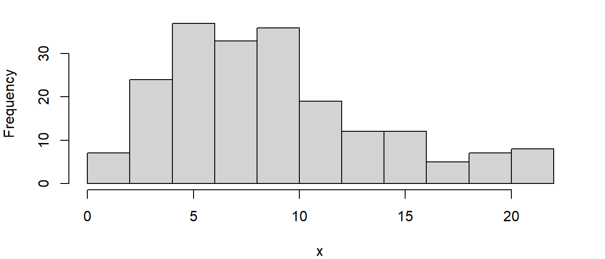
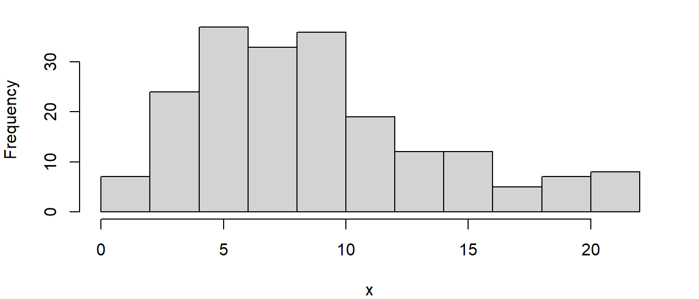

Chapter 3 Probability Distributions
When a biologist conducts a field study, the usual purpose is to collect data that will be useful for management. Examples of data that could be collected include (i) whether a fish with a radio transmitter was detected, (ii) how many tags were reported by anglers over a fishing season, (iii) how many fish of each age were observed in a sample, or (iv) number of fish caught in a single tow of a net. Each of these examples arises from a different statistical distribution. The distribution affects the properties of the data and how those data might be analyzed. For example, observations in the first example are either Yes or No, which could be represented as a 1 or 0. Having only those two possible values certainly affects characteristics of that distribution as well as methods for analysis.
In this chapter, we will examine some of the more common and important statistical distributions, and learn how to simulate observations from those distributions. Simulation will be an important skill in the chapters that follow, in that simulated data with known parameters provide a valuable way of evaluating field study designs and methods of analysis. The first few distributions that we consider are discrete (Section 3.1); that is, non-negative whole numbers that are appropriate for counts like the number of fish in a single haul of a net. The second category is continuous distributions (Section 3.2), for real numbers such as a catch rate of 0.52.
3.1 Discrete
3.1.1 Bernoulli
The most basic discrete distribution is the Bernoulli. There are only two outcomes, often referred to as success and failure. The classic example of a Bernoulli distribution is a coin toss, where “heads” might be considered success and “tails” failure. This distribution has a single parameter p, representing the probability of success. Its complement (1-p) is the probability of failure. Searching a lake for a fish with a radio transmitter is a fisheries example of a Bernoulli trial, where p represents the probability of detecting the fish’s signal (success). Other biological examples are whether a fish with a transmitter is dead or alive and whether or not a study site is occupied.
Let’s begin with R code for a hands-on example, where a coin was tossed ten times. It is convenient in R to use 0 for tails and 1 for heads:
y <- c(0,0,1,0,0,1,0,0,0,1) # Coin toss observations, 0=tails
N.obs <- length(y) # R function to count number of observationsAs usual, you should paste the code into an RStudio script window. You can select both lines and click the Run icon in order to run both at once. The first line assigns the vector of 0s and 1s to the variable y. The next line uses the length() function to count the number of observations in the vector y. We could have used the code N.obs <- 10 but there are two related reasons not to do so. First, hard-coding a constant for sample size means that we would need to remember to change that line if the y vector was later updated with a different number of observations. Second, you should never do anything manually that computer code can do for you. Letting R count the observations means that you will never miscount, and your code will still work correctly if you change the y vector and end up with a different sample size.
Another critical step in data analysis is to plot the data whenever possible, in order to look for patterns. Here, plotting the sequence of 0s and 1s is not that useful. A better summary plot is to examine the total number of 0s and 1s. We can use the table() function, which returns a vector with the number of 0s and 1s in the y vector. The barplot() function plots the two counts (Figure 3.1):
FIGURE 3.1: Summary bar plot of coin tosses.
Running these lines of code in a script window causes this plot to appear automatically under the Plots tab in the lower right RStudio window. We can save the plot image or copy and paste it into a report using menu option Export under the Plots tab. Examining the plot shows the unusual result of seven “tails” and three “heads”. We would expect the counts to be about equal for the two categories, given the assumed probability of success (p) for a fair coin of 0.5.
Can you think of a physical process (hands-on method) that would produce Bernoulli data using other values for p, such as 0.25 or 0.33? What value for p might you expect for a fisheries examples, such as an annual exploitation rate (probability of being harvested), tag reporting rate (probability of angler returning a tag), or survival rate of adult fish in a lake (probability of surviving from year i to i+1)? These are the kinds of parameters that a field biologist might need to estimate. In the chapters that follow, we will examine some methods for collecting the data and estimating those probabilities.
We can generate simulated observations from a Bernoulli distribution using the rbinom() function:
N.obs <- 30
p <- 0.4
y <- rbinom(n=N.obs, prob=p, size=1)
Counts <- table(y) # Summary table of 0 vs 1
barplot(Counts)The rbinom() function generates values from a binomial distribution (described in Section 3.1.2). If we set the trial size to 1 (e.g., a single coin toss), we simulate draws from a Bernoulli distribution. The other two arguments in the rbinom() function are how many Bernoulli trials to simulate (n) and the probability of success (prob). How many values of 1 would you expect the vector y to contain in a vector of 30 replicate observations? As above, the final two lines can be used to count 0s and 1s and view a plot for these simulated data.
One of the most important benefits of using simulation is the ability to examine results from large sample sizes. For example, the following code shows that the rbinom() function produces an outcome very close to the expected proportion of 0s and 1s:
rm(list=ls()) # Clear Environment
N.obs <- 1000
p <- 0.4
y <- rbinom(n=N.obs, prob=p, size=1)
SumOnes <- sum(y)
SumOnes
SumOnes/N.obs # Proportion of trials that are successful
Counts <- table(y)
barplot(Counts)The first line of code just clears the Environment, ensuring that we start from a clean slate. The sum() function provides a total for the y vector, which is equal to the number of successful trials. Dividing by the number of observations is an empirical estimate of p. The plot (Plot window) shows the result for one simulation (with N.obs replicates). How close to the expected count of 1s (400) did you observe? How much does the result vary when you do multiple simulations? (Highlight all the statements and click Run several times to see the variation.)
3.1.2 Binomial
The binomial distribution is simply the combined total from multiple Bernoulli trials. One physical example would be the number of heads in five tosses of a coin. Each toss is an independent Bernoulli trial, but we record the total number of successes (heads). We could obtain anything between 0 and 5 heads in a single trial. We assume that the probability of success (p) is constant for each Bernoulli trial (e.g., each coin toss).
One fisheries example of a binomially distributed process would be the number of recaptures in a two-sample mark-recapture study. In that case, the number of fish in the second sample is the size of the trial, and fraction of the population that is marked is the probability p. Another fisheries example would be the number of tag returns in a study to estimate the exploitation rate (rate of harvest). The number of tagged fish is the size of the trial and the exploitation rate is p. A telemetry study to estimate fish survival rate is a third example. The initial number of fish with transmitters is the size of the trial. The survival rate is p and the number of survivors at the start of the next period is binomially distributed.
Let’s start with a physical example of drawing five playing cards (with replacement) and recording the number of clubs. The probability of success in this case (drawing a club) is 0.25 and there are six possible outcomes (0-5 clubs). The expected number of clubs is 1.25 (trial size * p).
rm(list=ls()) # Clear Environment
Clubs <-c(0, 0, 3, 3, 1, 1) # Drawing five cards, with replacement
N.trials <- length(Clubs) # Function for getting number of trials
Counts <- table(Clubs)
barplot(Counts)
barplot(Counts, xlab="Number of clubs")Again we let R count the number of trials (6 in this case) and use the table() function to summarize the outcomes. Our sample size is small and the plot only shows the three observed outcomes. The plot can be made more understandable (especially by someone else) by adding a plot option (xlab) to label the x axis. Doing more than one plot produces a sequence of plots which you can view by using the blue left and right arrows in the Plot window. Practice modifying the above code by adding a label for the y axis (e.g., “Frequency”). You can find the full list of bar plot options by entering “barplot” in the search box in the RStudio help window (or simply type ?barplot) in the Console).
We can alleviate our small sample size issue by turning to a simulation version. We again use the rbinom() function from the Bernoulli example, but now size is greater than 1:
rm(list=ls()) # Clear Environment
N.trials <- 30
p <- 0.25 # Probability of drawing a club
Trial.size <- 5
Clubs <- rbinom(n=N.trials, prob=p, size=Trial.size)
Clubs
Counts <- table(Clubs)
barplot(Counts)Each of the thirty observations now represents a trial size of 5 (in total, a simulation equivalent to 150 Bernoulli trials). Only part of the Clubs vector is visible in the Environment window but we can put Clubs as a line of code to print the whole vector in the Console. We again summarize the counts and plot the results using the barplot() function. Highlight the code in the Source window and run it multiple times to get some insight into the variability of the simulated system. For example, how often do you observe 0 or 5 Clubs? Which outcome(s) occurs most often (mode) and how frequently does the mode change?
We would expect to observe very few trials with 5 successes, because the probability is quite low (0.255=0.001). We can calculate it in the Console, by entering the expression 0.25^5. There is a higher probability of 0 successes (0.24), which can be calculated as 0.75^5 or (1-p)5, because 1-p is the probability of failure (not getting a club). It is more involved to calculate the probabilities of 1-4 successes because they can be obtained multiple ways (e.g., 1 success can be obtained five ways (10000, 01000, 00100, 00010, 00001). We could calculate those probabilities using the binomial probability distribution: \(f(k) = {n \choose k} p^{k} (1-p)^{n-k}\), where k is the number of successes in a trial of size n. R code for this calculation uses the choose() function; for example, choose(Trial.size,0) * p^0 * (1-p)^5 calculates the probability of 0 clubs in five draws. We could get an approximate (“brute force”) estimate of the probabilities by increasing N.trials to a large value (say 10,000) and dividing the Counts vector by N.trials to estimate at the proportion of trials resulting in 0, 1,…5 successes:
rm(list=ls()) # Clear Environment
N.trials <- 10000
p <- 0.25 # Probability of drawing a club
Trial.size <- 5
Clubs <- rbinom(n=N.trials, prob=p, size=Trial.size)
#Clubs
Counts <- table(Clubs)
barplot(Counts)
Counts/N.trials # Vector division - probabilities of 0-5 ClubsNote that we used a pound sign to turn off (“comment out”) the line for printing the Clubs vector to the Console, and print to the Console the estimated probabilities. The mode of our simulated distribution is in agreement with the expected value (trial size * p), as are the estimated probabilities for 0 and 5 clubs.
3.1.3 Multinomial
The Bernoulli and binomial distributions return a single value: success or failure for the Bernoulli and the number of successes (out of a specified trial size) for the binomial. The multinomial distribution extends that to a vector of results. A classic physical example would be to roll a die several times and record how many rolls were a 1, 2, …, 6. A fisheries example would be to collect a sample of fish and determine how many are age 1, 2,… The focus in that example is on estimating the age distribution, or proportions of fish by age. An age distribution contains valuable information about the rates of mortality and recruitment (year-class strength). Another fisheries example would be to collect a sample of fish (e.g., from electrofishing or a trawl) and determine the number caught by species. Species composition can be an important indicator of the ecological health of a study site (e.g. if there is a high relative abundance of species considered tolerant of poor water quality).
Let’s begin with a hands-on example. I roll a die ten times, and record as a vector the number of times I get a 1, 2, …, 6:
rm(list=ls()) # Clear Environment
x <-c(2,3,3,0,2,0) # Generated using die, equal cell probabilities
SampleSize <- sum(x)
barplot(x)Here R calculates the sample size (SampleSize), even though we know in this instance that there were 10 rolls. The barplot() function generates the plot but without any labels is not very appealing. We can dress it up a bit by adding some options (Figure 3.2). We first create a vector with values 1-6 to serve as x-axis labels (seq() function, from 1 to 6 by 1). Then we use the names.arg option to add the labels, and add x and y axis titles using xlab and ylab respectively.
x.labels <- seq(from=1, to=6, by=1) # x axis labels for plotting
barplot(x, names.arg=x.labels, xlab="Die side", ylab="Number of rolls")FIGURE 3.2: Summary bar plot of die rolls.
We can simulate a multinomial distribution as follows:
rm(list=ls()) # Clear Environment
SampleSize <- 30 # e.g., sample of 30 fish assigned by age
TrueP <- c(0.1, 0.3, 0.4, 0.1, 0.05, 0.05) # probability of being ages 1-6
Reps <- 1 # How many replicate multinomial trials to carry out
# Simulate a single trial using rmultinom function
rmultinom(n=Reps, prob=TrueP, size=SampleSize) # Prints matrix to Console
x <- rmultinom(n=Reps, prob=TrueP, size=SampleSize)
# x contains matrix of counts (one column per Rep)
x.vec <- as.vector(t(x)) # Transpose matrix then convert to vector
age.vec <- seq(1,6, by=1)
barplot(x.vec, names.arg=age.vec, xlab="Age", ylab="Number of fish")In this simulation, the age proportions (TrueP) are arbitrarily chosen (but could be based on field data). Run statements one-by-one to see how each line of code works. Note that the rmultinom() function returns a matrix with six rows and one column (n determines how many columns are returned). Rather than a column, we want a row vector, with the number of fish by age in successive columns. We use the t() (transpose) function to transpose the matrix and the as.vector() function to convert the matrix (with one row) into a row vector. We could have done this transformation in two steps but instead have nested the two functions. That results in more compact code but it is always a fine option to do the steps separately for greater clarity.
Run the code beginning with the x <- rmultinom() line several times to see how much the age distribution varies from one random sample to the next. The underlying age proportions are fixed, but the counts vary quite a bit for this small sample size. This is an example of how simulation is helpful in gaining experience and intuition in judging pure sampling variation versus a real biological result (e.g. good or bad year-class strength).
3.1.4 Poisson
Like the Bernoulli, binomial, and multinomial distributions, the Poisson and negative binomial distributions are used for counts (non-negative whole numbers). The first three cases have an upper bound (1 for the Bernoulli, trial size for the next two) whereas the Poisson and negative binomial distributions do not (in theory, if not in practical terms). The Poisson is simpler than the negative binomial in that it is described by a single parameter, usually \(\lambda\), which represents the mean and variance of the distribution. A fisheries example of a Poisson distribution could be the number of fish per day moving upstream via a fish ladder. A model for this process could be useful for designing new fish ladders to have an appropriate capacity. Another example could be the number of fish caught per trawl tow. In this case, emphasis might be placed on how trawl catches vary from year to year, as an indication of population status.
Our simulation uses an arbitrary value for \(\lambda\):
rm(list=ls()) # Clear Environment
N <- 30
lambda <- 4
Count <- rpois(n=N, lambda=lambda)
Freq <- table(Count) # Distribution of simulated counts
barplot(Freq, main="", xlab="Count", ylab="Frequency")
mean(Count)
var(Count)Run the lines of code multiple times to gain experience with the Poisson distribution. How often is the mode of the distribution equal to \(\lambda\)? Are the estimated mean and variance (printed to the Console) close to \(\lambda\)? Increase the sample size to get a smooth distribution and reliable estimates of the two sample statistics.
It is also useful to run the code using other values for \(\lambda\). What value for \(\lambda\) causes the mode to shift to 0? At what value does the sample distribution look like a bell curve (i.e., symmetrical)? One of the key benefits of simulation is that we can easily try different scenarios to build understanding about the system being modeled.
The plot can sometimes be misleading because it only includes observed levels. We can modify the code to include levels with a frequency of zero:
rm(list=ls()) # Clear Environment
N <- 30
lambda <- 4
Count <- rpois(n=N, lambda=lambda) # Counts drawn from Poisson distribution
Freq <- table(factor(Count, levels = 0:max(Count)))
barplot(Freq, main="", xlab="Count", ylab="Frequency")
mean(Count)
var(Count)Now the table() function operates on counts transformed into factors (categories or levels) by the factor() function. The levels= argument forces factor() to use a range of levels from 0 to max(Count), in order to include levels with a frequency of zero. Try the following partial code in the Console to see the levels (“0”, “1”, etc) created by the factor() function: myfact <- factor(Count, levels = 0:max(Count)).
3.1.5 Negative binomial
As noted above, the negative binomial distribution is used in similar situations to the Poisson except that it has two parameters and is therefore more flexible. This is particularly helpful for ecological data, where counts are often more variable than would be expected under a Poisson distribution (Bolker 2008; Link and Barker 2009). The R function for generating negative binomial random variates (rnbinom()) can be parameterized in different ways; we use the “ecological” parameterization recommended by Bolker (2008). This uses the mean (termed \(\mu\)) but not the variance, instead using an overdispersion parameter k. Lower values of k result in a more heterogeneous distribution, and in ecological settings, k is often less than the mean (Bolker 2008). The distribution approximates a Poisson when k is large (e.g., >10*\(\mu\)). The code includes calculation of the variance as a function of mu and k (Bolker 2008). Alternatively the mean and variance (V) can be specified and used to solve for k: \(k = \mu^2/(V-\mu)\).
rm(list=ls()) # Clear Environment
N <- 30
mu <- 4
k=1
variance <- mu+(mu^2)/k
Count <- rnbinom(n=N, mu=mu, size=k)
Freq <- table(factor(Count, levels = 0:max(Count)))
barplot(Freq, main="", xlab="Count", ylab="Frequency")
mean(Count)
var(Count)This distribution has the same mean as in the Poisson example but tends to have a longer tail (occasional large counts). Rerun the code using different values for k; for example, Figure 3.3 uses a sample size of 200 to compare results for k=1 and k=10, each with \(\mu\)=4.
N <- 200
mu <- 4
k=1
Count <- rnbinom(n=N, mu=mu, size=k)
Freq <- table(factor(Count, levels = 0:max(Count)))
barplot(Freq, main="", xlab="Count", ylab="Frequency")
k=10 # Reduce degree of overdispersion
Count <- rnbinom(n=N, mu=mu, size=k)
Freq <- table(factor(Count, levels = 0:max(Count)))
barplot(Freq, main="", xlab="Count", ylab="Frequency")FIGURE 3.3: Negative binomial frequency distributions for k=1 (left) and 10 (right).
3.2 Continuous
3.2.1 Uniform
A uniform distribution (bounds a, b) is flat in shape, indicating that all values between a lower and upper bound are considered equally likely. It is also useful as a “first” model for situations where relatively little is known other than the lower and upper bounds (Law and Kelton 1982). Probabilities have default bounds of 0 and 1, so a fish population model might use a uniform 0-1 distribution for probabilities such as survival rate. More narrow bounds could be used in cases where prior information was available; for example, a pilot study might indicate that the tag-reporting rate would be expected to vary between 0.4 and 0.6. Another fisheries example would be a uniform distribution between 60 and 70, for simulating individual variation in maximum size for a growth curve.
We begin with a simulation example, using the default range of 0-1 for the runif() function:
rm(list=ls()) # Clear Environment
Reps <- 30 # Replicate draws from a uniform distribution
p <- runif(n=Reps)# Default range of 0-1. Can specify using min, max
hist(p, breaks=5, main="")Try running the code several times and note the variation in pattern from one simulation run to the next. We use the breaks=5 option in the hist() function so that the histogram bin intervals are stable among runs. Specifying a null character string for “main=” prevents the plot from including a main title. Next, increase the sample size and note the increased smoothness of the observed distribution. What would be the expected mean of the distribution? Estimate the mean and compare the observed and expected value among runs.
As noted above, the runif() function allows for a uniform distribution using any lower and upper bounds. For example, we might simulate uncertainty about an exploitation rate (fraction of the population that is harvested) by allowing randomly drawn values in a specified interval; for example, runif(n=Reps, min=0.3, max=0.4). The runif() function is not constrained to positive values; for example, it could be used with bounds -0.5 and 0.5 to simulate uncertainty about a parameter that is close to 0 but can be positive or negative. The chapters that follow will include many examples where a uniform distribution is relevant for fisheries modeling.
3.2.2 Beta
The beta distribution has a lower bound of 0 and an upper bound of 1, so it is useful for modeling parameters with those bounds (i.e., probabilities). A fisheries model might use a beta distribution to simulate variation in a survival probability or the probability of a tag being returned. The uniform distribution (Section 3.2.1) can also be used for probabilities, but only for the case where all values are equally likely. The beta distribution is more flexible and can not only be flat but also u-shaped, bell-shaped, or left- or right-skewed. Figure 3.4 shows sample distributions for shape parameters \(\alpha\)=1 and \(\beta\)=0.5, 1, and 5.
FIGURE 3.4: Histogram for 200 random draws from a beta distribution, with alpha=1 and beta=0.5 (left), 1 (center), and 5 (right).
We simulate draws from a beta distribution using the rbeta() function. Starting with \(\alpha\) and \(\beta\) set to 1 would be appropriate for a situation where all probabilities are equally likely:
rm(list=ls()) # Clear Environment
Reps <- 200 # Replicate draws from a beta distribution
alpha <- 1
beta <- 1
x <- rbeta(n=Reps, shape1=alpha, shape2=beta)
hist(x, main="", xlab="Probability")After running the above code multiple times, try a beta(8, 4) distribution. These parameter values could result from a pilot study with seven successes in ten trials (\(\alpha\)=7+1, \(\beta\)=3+1). This shifts the distribution toward a mode of 0.7, which is the observed proportion of successes in ten trials. Try other arbitrary values for the two parameters to vary the shape of the distribution. Can you think of a situation where probabilities would be expected to be close to 0 or close to 1?
3.2.3 Normal
The normal distribution is the well-known bell curve from traditional statistics courses. The distribution is unbounded (bounds -\(\infty\), \(\infty\)). The shape of the distribution is determined by the mean (location) and standard deviation (spread). A fisheries example might be a simulation where size-at-age varied among individuals according to a normal distribution.
Let’s look at simulation code for length of individual fish, assuming a mean of 30 and standard deviation of 2:
rm(list=ls()) # Clear Environment
Reps <- 30 # Replicate draws from a normal distribution
Len <- rnorm(n=Reps, mean=30, sd=2)
hist(Len, main="")Run the code a few times to look at the variation in shape and bounds at a relatively small sample size. Next, increase the sample size and determine through trial and error the smallest sample size that provides a relatively smooth bell-curve shape. Estimate the mean and standard deviation (function sd()) and compare the observed and true values.
3.2.4 Lognormal
The lognormal distribution (bounds 0, \(\infty\)) is useful in ecological settings because it excludes negative values and allows for a long upper tail. A classic fisheries example of a lognormal distribution is annual recruitment for marine fish species (number of young entering the population). Most years result in low recruitment but there are occasional extreme values when environmental conditions are right.
We begin with simulation code:
rm(list=ls()) # Clear Environment
Reps <- 200
ln.m <- 0 # Ln-scale mean
ln.v <- 0.5 # Ln-scale variance
y <- rlnorm(n=Reps, mean=ln.m, sd=sqrt(ln.v))
hist(y, main="Lognormal distribution")
Exp.mean <- exp(ln.m+(ln.v/2)) # Calculate arithmetic scale expected mean
abline(v=Exp.mean, col="red")
Exp.var <- (exp(2*ln.m+ln.v))*(exp(ln.v)-1) # Arithmetic scale expected variance
mean(y)
var(y)The rlnorm() function generates random lognormal values, using an arbitrarily chosen mean and standard deviation specified in natural log-scale. Those values can be used to calculate the expected mean and variance in arithmetic scale. The abline() function can be used to add to the histogram a vertical (v=) line for the expected arithmetic-scale mean (Figure 3.5). The line color is specified as col=“red”; other options including line weight and pattern can be found in the Help window. Compare the estimates of arithmetic-scale mean and variance for your (relatively large) sample of lognormal random variates to the expected values (visible in the Environment window).
FIGURE 3.5: Histogram for 200 lognormally-distributed values, with ln-scale mean of 0 and variance of 0.5. Red vertical line denotes expected mean.
3.2.5 Gamma
The gamma distribution is similar to the lognormal in that has a lower bound of 0 and an upper bound of \(\infty\). Thus it also excludes negative values and allows for a long upper tail. This distribution is often used to simulate waiting times (how long until some number of events has occurred, based on a specified average time between events). We consider it here simply because it can take on a variety of shapes depending on its parameters (Bolker 2008). Figure 3.6 shows sample distributions for shape parameter \(\alpha\)=3 and scale or spread parameter \(\beta\)=1 and 3.
 

FIGURE 3.6: Histogram for 200 gamma-distributed values, with alpha=3 and beta=1 (left) and 3 (right).
We simulate draws from a gamma distribution using the rgamma() function, with arbitrary values for \(\alpha\) and \(\beta\):
rm(list=ls()) # Clear Environment
Reps <- 200 # Replicate draws from a gamma distribution
alpha <- 3 # Shape parameter, > 0
beta <- 3 # Scale parameter, > 0
x <- rgamma(n=Reps, shape=alpha, scale=beta)
hist(x, main="")
Exp.mean <- alpha*beta
Exp.var <- alpha*beta^2
mean(x)
var(x)A sample size of 200 replicates produces a relatively smooth pattern for the distribution. How close are the estimated mean and variance to the expected values for this sample size? Try adjusting the two parameters to vary the shape of the distribution. What values for \(\alpha\) and \(\beta\) produce a right-skewed distribution (long right tail), or a pattern somewhat like a normal distribution (bell-curve)?
3.3 Exercises
Use a physical process (i.e., not simulated) to generate twenty Bernoulli observations with probability of success 0.25. Include in your code comments describing how you obtained the data. Produce a summary plot of the total number of 0s and 1s. How does your observed number of successes compare to what you would expect?
Use a physical process to generate ten binomially distributed observations, with a trial size of at least four. What is the probability of success and the expected number of successes per trial? Produce a histogram showing the frequencies for different numbers of success per trial.
Use a physical process to generate 10 outcomes from a multinomial process with at least three possible outcomes. Describe in your code comments the physical process for obtaining the data and include a plot of the frequencies. How do the frequencies compare to what you would expect?
Assume that the following vector contains trawl catches: y=c(7, 5, 1, 5, 0, 3, 8, 2, 14, 5, 0, 6, 9, 1, 2, 2, 1, 1, 0, 9, 2, 2, 4, 11, 1, 1, 7, 3, 1, 1). Based on your analysis (including plot), were these data likely generated from a Poisson or negative binomial distribution?
Provide simulation code for generating normally-distributed length data for fish ages 1 (n.1=40, age-1 mean 30, sd 5) and 2 (n.2=25, age-2 mean=50, sd=7). Plot the combined length sample. In multiple simulations using these default values, how frequently is the length distribution visibly bimodal?